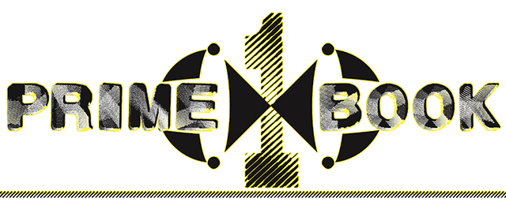

2025 PrimeBookOne Code Snippets
Prime Differences Arrays
https://github.com/PrimeBookOne/PrimeBookOne.github.io/tree/main/primebookone
Begin with 5 and add to each previous number from the sequential array.
Remember to multiple the difference number by two before adding.
Only 8 Bit Array Required. ** **
The world of prime differences is very small.
Jason Brodsky
primebookone@outlook.com jasonbrodsky@hotmail.com jsnb76@antikytherian.com
I CAN PROVIDE CODE TO
THOSE INTERESTED IN
FURTHERING THIS PROJECT